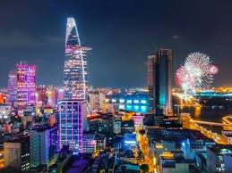
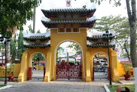
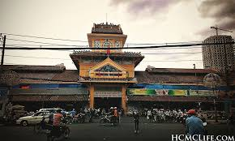

Thành phố Hồ Chí Minh nằm ở giữa vùng Nam Bộ trù phú, tiếp giáp với phía Nam của miền Ðông Nam Bộ và rìa Bắc của miền Tây Nam Bộ. Là thành phố đông dân và lớn nhất Việt Nam. Nơi đây là đầu mối giao thông lớn, nối liền với các tỉnh trong vùng và là cửa ngõ quốc tế của khu vực.
 Ngay cái nhìn đầu tiên, Sài Gòn - thành phố Hồ Chí Minh đã để lại ấn tượng sâu sắc của một đô thị lớn nhất, náo nhiệt nhất và năng động nhất trong cả nước. Những phố xá đèn sáng choang, sinh hoạt và vui chơi giải trí kéo dài đến tận khuya.
Những dòng xe cộ hối hả trên khắp các ngả đường như không bao giờ dứt. Dãy dãy cửa hiệu với hàng hóa phong phú đủ màu, đủ loại góp phần làm nên danh tiếng "Sài Gòn - thiên đường mua sắm". Nhan nhãn những quán ăn, cửa tiệm, nhà hàng với
thực đơn rất đa dạng khiến ẩm thực trở thành một cái thú không thể thiếu đối với du khách đến nơi đây
Nhưng đàng sau sự sôi nổi ấy là một cuộc sống phóng khoáng mà hài hòa, với những phong tục tập quán lâu đời của một nền văn hóa truyền
thống đã thích nghi với cuộc sống khai hoang mở đất ở một vùng đồng bằng sông nước, và sớm giao thoa với các nền văn hóa trong khu vực và phương Tây.
Hàng trăm chùa chiền, hàng trăm ngôi đình thờ phụng các anh hùng đất nước và các tiền hiền có công mở cõi vẫn quanh năm nhang khói. Các chứng tích của sự nghiệp giải phóng thành phố và đất nước được trân trọng bảo tồn. Ngoài các lễ tết chính thức, người dân thành phố tổ chức rất trọng thể nhiều lễ hội theo truyền thống "uống nước nhớ nguồn" như Lễ hội Nghinh Ông, Ngày giỗ tổ nghề, Ngày Thầy thuốc, Ngày Nhà giáo, Ngày Báo hiếu, Ngày Phụ nữ…
Các kiến trúc của Sài Gòn - Hòn ngọc Viễn Đông xưa được giữ gìn và tôn tạo, trở thành những điểm tham quan lý thú. Bên cạnh đó là những công trình hiện đại phát huy từ cảm hứng trong kiến trúc truyền thống Việt Nam. Ở nơi đất hẹp người đông này, du khách sẽ bất ngờ với những đại lộ rợp bóng cổ thụ trăm năm, những công viên rộng rực rỡ hoa lá, những khu biệt thự thanh bình. Bên cạnh những tòa cao ốc mới ở trung tâm thành phố, khách sẽ có dịp ghé thăm Chợ Lớn của người Hoa với những khu phố cổ nhộn nhịp, hoạt động thương mại và sản xuất luôn nhộn nhịp ngày đêm.
Với hệ thống 11 bảo tàng, thành phố Hồ Chí Minh là nơi có số bảo tàng nhiều nhất so với các tỉnh, thành trong cả nước. Nội dung trưng bày của các bảo tàng khá phong phú, và không chỉ về lịch sử và văn hóa địa phương, mà của cả Nam bộ, quốc gia và khu vực Đông Nam Á, cung cấp nhiều kiến thức lý thú.